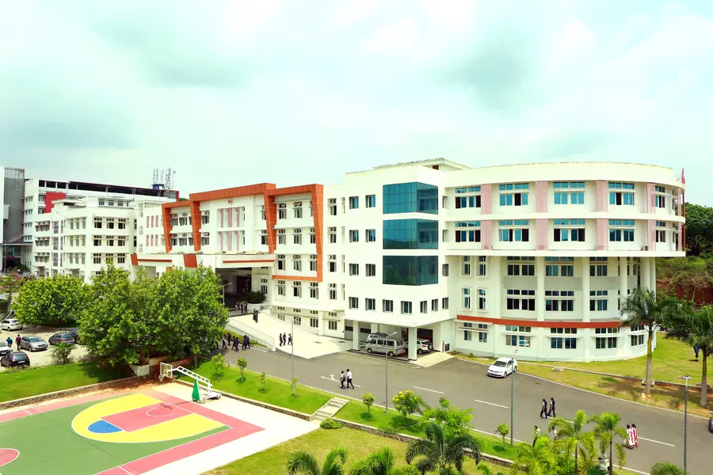
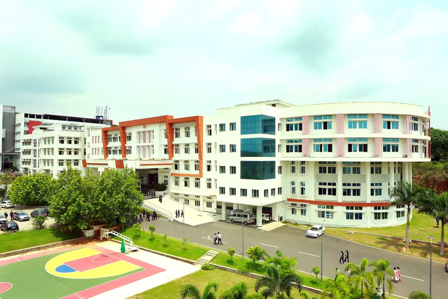
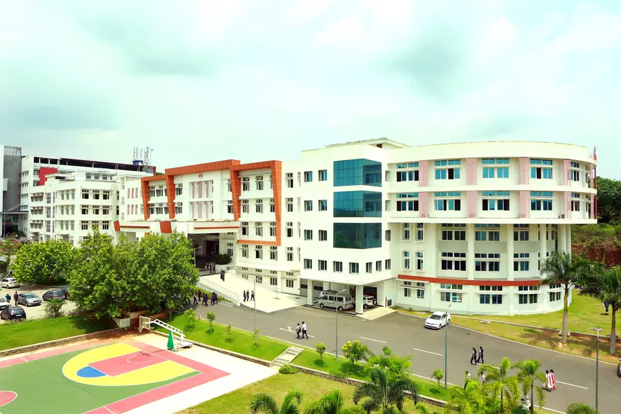
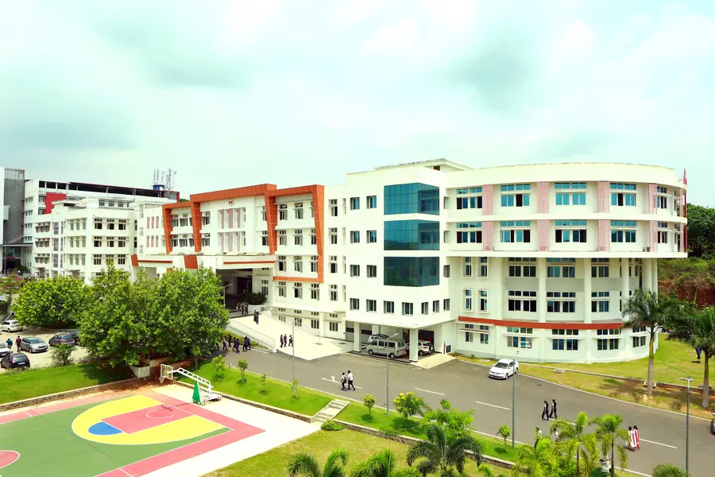

 
 MUTHOOT INSTITUTE OF TECHNOLOGY AND SCIENCE (MITS) IS PROMOTED BY MUTHOOT M. GEORGE INSTITUTE OF TECHNOLOGY, A SECTION 25 COMPANY WITHIN THE MUTHOOT GROUP.
MITS IS A SELF FINANCING TECHNICAL INSTITUTION OFFERING POSTGRADUATE AND UNDERGRADUATE ENGINEERING PROGRAMMES, SITUATED IN THE INDUSTRIAL SUBURB OF KOCHI, CLOSE TO THE SMART CITY AND INFO PARK, APPROXIMATELY 15 KMS FROM VYTILLA JUNCTION TOWARDS MUVATTUPUZHA ON THE COCHIN MADURAI NATIONAL HIGHWAY.
THIS “TEMPLE OF LEARNING” WILL PROVIDE TO THE STUDENTS, STATE-OF-THE-ART INFRASTRUCTURE, HIGHLY QUALIFIED AND PROFICIENT TEACHERS FROM VARIOUS FACULTY OF ENGINEERING AND ALLIED STREAMS, EMBEDDED IN A CONDUCIVE ENVIRONMENT WHERE FOCUS WILL BE ON THEIR HARMONIOUS DEVELOPMENT.
EMAIL: IINFO@MGITS.AC.IN
PHONE: 0484-2883300/0484-2732100/111
LOCATION: KOCHI-MADURAI-TONDI POINT RD, PUTHENKURISH, VARIKOLI,
KOCHI, KERALA 682308